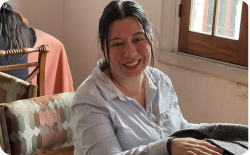
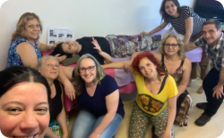
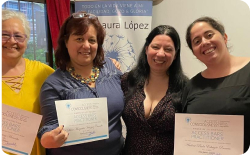
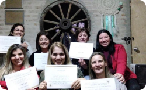
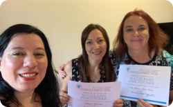
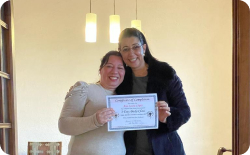
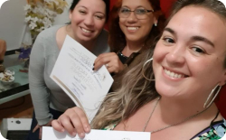

No tenia respuestas del como yo iba a cambiar las cosas, simplemente sabia que era posible. Siempre que escuchaba a alguien decir que algo era imposible, yo buscaba hasta encontrar la manera de mostrar lo contrario. Tenia muchas formas de “luchar” sobre lo que de alguna forma percibia injusto y mucho tiempo después entendo que esa era una fuerza interna que me empujaba a buscar más. Ahora se que ser “la rara”, como las personas solian llamarme era simplemente mi saber, de que había más y que estaba dispuesta a encontrar más.
Creci en un entorno con muy pocas posibilidades y repeti patrones familiares en un muchas ocaciones. Con miles de emociones y pensamientos que no quería tener fue que inicie un camino que aun hoy no termina. No sabía nada sobre la energía pero sabía que estaba allí donde mirara. Entonces empece a asistir a inumerables clases y aprender todo lo que podía, hasta que conecte con mi propio saber y aún así siempre continuo actualizando y aprendiendo más.
Fue así que con el tiempo abrí mi consultorio, lo que fue un gran regalo para mi que, las personas lleguen y a través de las herramientas puedan cambiar lo que simplemente no les funcio antes.
Hoy doy clases y sesiones a todas las edades, principalmente de Access Consciousness entre otras.
Y las personas relatan como han cambiado áreas de sus vidas que no creían capaces de cambiar antes. Sus cuerpos han aprendido y siguen aprendiendo a vivir desde un mayor espacio y una mayor consciencia.
Facilitar es una de mis mayores habilidades.Esto es para mi cambiar al mundo, porque cuando cambias un día de una persona, el mundo también cambia.
¿Qué energia podemos ser con nuestros cuerpos que no hemos reconocido y que si lo reconocienramos cambiaria el mundo a nuestro alrededor? La consciencia se entrena todos los días, ella no juzga a nada ni a nadie y lo incluye todo. ¿Como sería vivir en un mundo sin juicios? ¿Lo eliges? Elige!
      